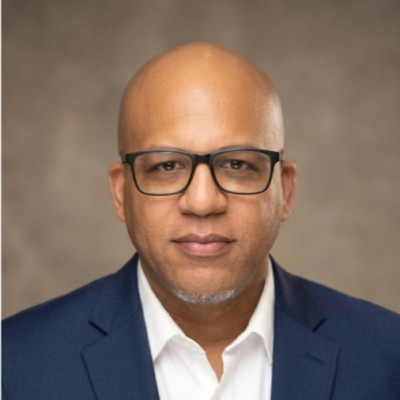

HyrLink
liveAn agentic AI recruiting and candidate engagement platform. I co-developed the product and a live SLM based candidate chatbot, from concept through MVP.
IT & Security Executive
Director of IT & Security for regulated SaaS technology. Zero Trust infrastructure, high-stakes M&A, clean audits, twenty years running.

For over twenty years I have built and run IT and security operations, the last decade inside regulated Life Sciences SaaS environments. My defining project was building Sparta Systems' IT and security function from the ground up, then leading it through a four year, multi phase acquisition by Honeywell as primary integration lead. Zero unplanned outages. Zero major audit findings. That record is what kept RFPs, deals, and renewals moving with enterprise pharma and medical device customers who do not tolerate risk.
Outside the day job I stay hands on. I build AI enabled tools myself, including a live agentic recruiting chatbot, a third party risk management platform, and a GRC risk register, applying the same compliance discipline to new technology that I apply to enterprise infrastructure. I do not just approve technology decisions. I understand what is under the hood.
Every role below shipped a measurable outcome. Read it the way I read a system log, chronological, evidence first.
Co-developer and technical advisor for an agentic AI recruiting platform, from concept through MVP. Shaped product direction, market narrative, and early stakeholder relationships.
activeLed a blended team of up to 15 across the US, UK, and India. Primary integration lead for a four year M&A: network trust, end user computing migration, and data center workload transition completed with zero unplanned outages. Sustained zero major findings across consecutive SOC 2, ISO 27001, and ISO 9001 audits while remediating 50+ controls.
0 incidentsBuilt Sparta's IT and security function from the ground up, leading a 7 person blended team. Mobilized full remote work capability for 300–400 people across three countries in under four weeks during a business continuity event.
foundationalArchitected VMware/Hyper-V virtualization and SAN/NAS environments. Co-developed Sparta's early compliance strategy ahead of the company's formal audit program.
completeLed infrastructure and desktop teams. Directed Office 365 migration and early Azure/AWS cloud adoption. Introduced VLAN segmentation and 802.1X wireless authentication for compliance readiness.
completeLive tools I designed and built independently, applying the same GRC and operational discipline I use at enterprise scale.
An agentic AI recruiting and candidate engagement platform. I co-developed the product and a live SLM based candidate chatbot, from concept through MVP.
A solo-built third party risk management tool for startups that lack a dedicated GRC function, bringing enterprise vendor governance to teams that need it most.
A solo-built, GRC-lite risk register for small teams without formal compliance tooling. Same risk discipline, none of the enterprise overhead.
An application pipeline dashboard that streamlined my own job search and cut the administrative overhead of tracking submissions end to end.
I serve as a trustee for Our Beautiful Foundation, a nature, civics, and youth program working to build the next generation of engaged, grounded leaders. It is the same long-term thinking I apply to infrastructure, just pointed at people instead of systems.
Visit Our Beautiful FoundationThis page is the index, not the inbox. LinkedIn is the fastest way to reach me directly.